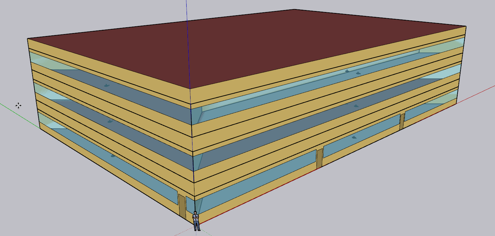
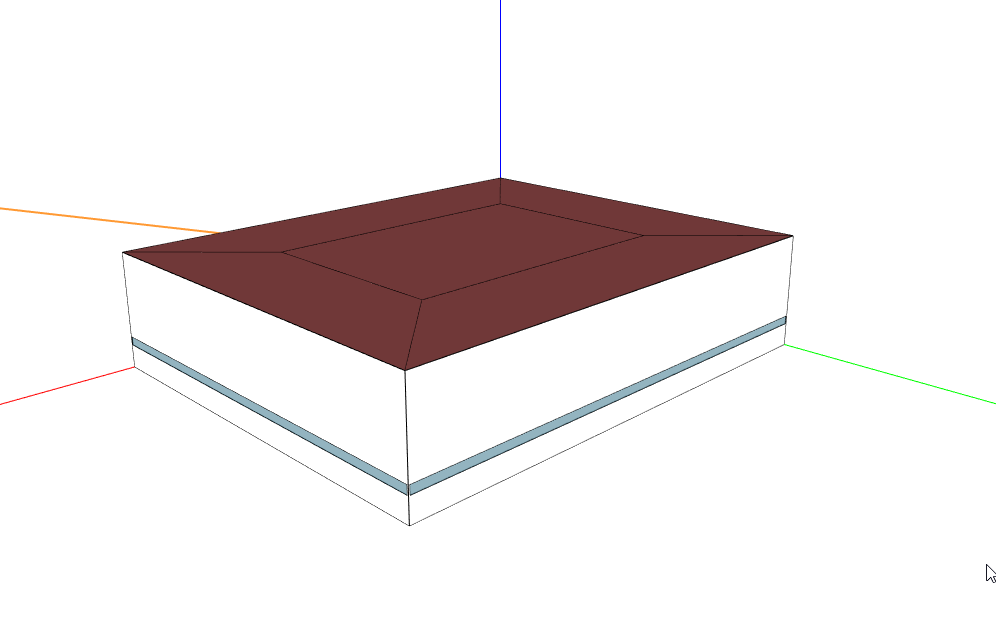

3. Buildings
This section provides specific information about the buildings included in Sinergym, independently of the rest of the components that make up the environment to be used in each experiment.
Important
If you are interested in including new buildings to this framework, please visit section Adding new buildings for environments.
Important
In order to get information about default observation and action variables in each building, it is available in project constants. Remember that it is possible to set a custom control and observation too, see example Changing observation and action spaces.
3.1. Datacenter
2ZoneDataCenterHVAC_wEconomizer.epJSON: It is a 491.3 m2 building divided into two asymmetrical zones. Each zone has an HVAC system consisting of air economizers, evaporative coolers, DX cooling coil, chilled water coil, and VAV. The main source of heat comes from the hosted servers.

3.2. 5Zone
5ZoneAutoDXVAV.epJSON: A single-story building divided into 5 zones (1 indoor and 4 outdoor). Its surface area is 463.6 m2, and it is equipped with a VAV package (DX cooling coil and gas heating coils) with fully auto-sized input as the HVAC system to be controlled.

3.3. Warehouse
ASHRAE9012016_Warehouse.epJSON: It is a non-residential 4598 m2 floor building, divided into 3 zones: bulk storage, fine storage and an office. The Office zone is enclosed on two sides and at the top by the Fine Storage zone, and it is the unique zone with windows. Available fuel types are gas and electricity, and it is equipped with HVAC system.

3.4. OfficeMedium
ASHRAE9012016_OfficeMedium.epJSON: It is a 4979.6 m2 building with 3 floors. Each floor has four perimeter zones and one core zone. Available fuel types are gas and electricity, and it is equipped with HVAC system.
{kind=link}
3.5. ShopWithVanBattery
ShopWithVanBattery.epJSON: It is a 390.2 m2 building, with only one floor. It has five zones; four of them are perimeter zones and one in the center. This is a low-energy building with photovoltaic panel and electrical storage. It demonstrates the use of the battery model for electrical storage. It has a full HVAC model and water heating service. This is a small repair shop. Open Monday through Friday, 45 hours per week.
{kind=link}
3.6. OfficeGridStorageSmoothing
OfficeGridStorageSmoothing.epJSON: It is a large office building with 12 floors and a basement, with a rectangular aspect and 46,320 m2. The building is organized in 19 zones: the basement, bot, mid and top level. Each level has a core zone and 4 perimeter zones. Floor zone is described for bot, mid and top level too. It has a battery control for charging and discharging from the grid.